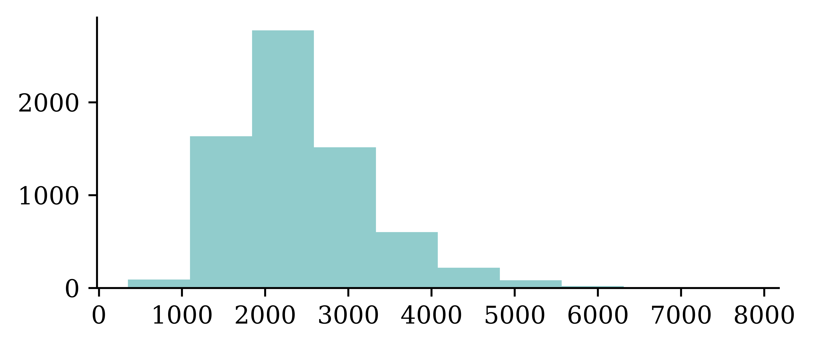

import random
from pathlib import Path
import zipfile
import ast, dis, io, tokenize
from urllib.request import urlretrieve
import numpy as np
import numpy.random as rnd
import pandas as pd
import spacy
from sklearn.feature_extraction.text import CountVectorizer, TfidfVectorizer
from sklearn.model_selection import train_test_split
from sklearn.preprocessing import LabelEncoder
import keras
from keras.callbacks import EarlyStopping
from keras.layers import Dense, Input
from keras.metrics import SparseTopKCategoricalAccuracy
from keras.models import SequentialNatural Language Processing
ACTL3143 & ACTL5111 Deep Learning for Actuaries
Natural Language Processing
What is NLP?
A field of research at the intersection of computer science, linguistics, and artificial intelligence that takes the naturally spoken or written language of humans and processes it with machines to automate or help in certain tasks.
Applications of NLP in Industry
1) Classifying documents: Using the language within a body of text to classify it into a particular category, e.g.:
- Grouping emails into high and low urgency
- Movie reviews into positive and negative sentiment (i.e. sentiment analysis)
- Company news into bullish (positive) and bearish (negative) statements
2) Machine translation: Assisting language translators with machine-generated suggestions from a source language (e.g. English) to a target language
3) Search engine functions, including:
- Autocomplete
- Predicting what information or website user is seeking
4) Speech recognition: Interpreting voice commands to provide information or take action. Used in virtual assistants such as Alexa, Siri, and Cortana
Deep learning & NLP?
Simple NLP applications such as spell checkers and synonym suggesters do not require deep learning and can be solved with deterministic, rules-based code with a dictionary/thesaurus.
More complex NLP applications such as classifying documents, search engine word prediction, and chatbots are complex enough to be solved using deep learning methods.
NLP in 1966-1973
“A typical story occurred in early machine translation efforts, which were generously funded by the U.S. National Research Council in an attempt to speed up the translation of Russian scientific papers in the wake of the Sputnik launch in 1957. It was thought initially that simple syntactic transformations, based on the grammars of Russian and English, and word replacement from an electronic dictionary, would suffice to preserve the exact meanings of sentences. The fact is that accurate translation requires background knowledge in order to resolve ambiguity and establish the content of the sentence. The famous retranslation of “the spirit is willing but the flesh is weak” as “the vodka is good but the meat is rotten” illustrates the difficulties encountered. In 1966, a report by an advisory committee found that “there has been no machine translation of general scientific text, and none is in immediate prospect.” All U.S. government funding for academic translation projects was canceled.”
— Russell & Norvig (2021, p. 21)
High-level history of deep learning

The attention mechanism (Bahdanau et al., 2015) and the Transformer architecture (Vaswani et al., 2017) underpin modern large language models.
How Computers View Text
Python imports
Also need to run python -m spacy download en_core_web_trf.
How the computer sees text
The following vectors are short sentences translated into numbered data that computers can read.
Spot the odd one out:
[112, 97, 116, 114, 105, 99, 107, 32, 108, 97, 117, 98][80, 65, 84, 82, 73, 67, 75, 32, 76, 65, 85, 66][76, 101, 118, 105, 32, 65, 99, 107, 101, 114, 109, 97, 110]Generated by:
print([ord(x) for x in "patrick laub"])
print([ord(x) for x in "PATRICK LAUB"])
print([ord(x) for x in "Levi Ackerman"])The ord built-in turns characters into their ASCII form.
TipQuestion
The largest value for a character is 127, can you guess why?
Similarly to image information ranging from 0 to 255, ASCII characters range from 0 to 127 representing 7 bits of binary numbers.
American Standard Code for Information Interchange
| Dec | Char | Esc |
|---|---|---|
| 0 | [Null] | \0 |
| 1 | [Start of Heading] | |
| 2 | [Start of Text] | |
| 3 | [End of Text] | |
| 4 | [End of Transmission] | |
| 5 | [Enquiry] | |
| 6 | [Acknowledge] | |
| 7 | [Bell] | \a |
| 8 | [Backspace] | \b |
| 9 | [Horizontal Tab] | \t |
| 10 | [Line Feed] | \n |
| 11 | [Vertical Tab] | \v |
| 12 | [Form Feed] | \f |
| 13 | [Carriage Return] | \r |
| 14 | [Shift Out] | |
| 15 | [Shift In] | |
| 16 | [Data Link Escape] | |
| 17 | [Device Control 1] | |
| 18 | [Device Control 2] | |
| 19 | [Device Control 3] | |
| 20 | [Device Control 4] | |
| 21 | [Negative Acknowledge] | |
| 22 | [Synchronous Idle] | |
| 23 | [End of Trans. Block] | |
| 24 | [Cancel] | |
| 25 | [End of Medium] | |
| 26 | [Substitute] | |
| 27 | [Escape] | |
| 28 | [File Separator] | |
| 29 | [Group Separator] | |
| 30 | [Record Separator] | |
| 31 | [Unit Separator] |
| Dec | Char |
|---|---|
| 32 | [Space] |
| 33 | ! |
| 34 | ” |
| 35 | # |
| 36 | $ |
| 37 | % |
| 38 | & |
| 39 | ’ |
| 40 | ( |
| 41 | ) |
| 42 | * |
| 43 | + |
| 44 | , |
| 45 | - |
| 46 | . |
| 47 | / |
| 48 | 0 |
| 49 | 1 |
| 50 | 2 |
| 51 | 3 |
| 52 | 4 |
| 53 | 5 |
| 54 | 6 |
| 55 | 7 |
| 56 | 8 |
| 57 | 9 |
| 58 | : |
| 59 | ; |
| 60 | < |
| 61 | = |
| 62 | > |
| 63 | ? |
| Dec | Char |
|---|---|
| 64 | @ |
| 65 | A |
| 66 | B |
| 67 | C |
| 68 | D |
| 69 | E |
| 70 | F |
| 71 | G |
| 72 | H |
| 73 | I |
| 74 | J |
| 75 | K |
| 76 | L |
| 77 | M |
| 78 | N |
| 79 | O |
| 80 | P |
| 81 | Q |
| 82 | R |
| 83 | S |
| 84 | T |
| 85 | U |
| 86 | V |
| 87 | W |
| 88 | X |
| 89 | Y |
| 90 | Z |
| 91 | [ |
| 92 | \ |
| 93 | ] |
| 94 | ^ |
| 95 | _ |
| Dec | Char |
|---|---|
| 96 | ` |
| 97 | a |
| 98 | b |
| 99 | c |
| 100 | d |
| 101 | e |
| 102 | f |
| 103 | g |
| 104 | h |
| 105 | i |
| 106 | j |
| 107 | k |
| 108 | l |
| 109 | m |
| 110 | n |
| 111 | o |
| 112 | p |
| 113 | q |
| 114 | r |
| 115 | s |
| 116 | t |
| 117 | u |
| 118 | v |
| 119 | w |
| 120 | x |
| 121 | y |
| 122 | z |
| 123 | { |
| 124 | | |
| 125 | } |
| 126 | ~ |
| 127 | [Del] |
“I knew she’d have an ASCII table in there somewhere. All computer geeks do.” (The Martian)
Random strings
The built-in chr function turns numbers into characters.
rnd.seed(1)chars = [chr(rnd.randint(32, 127)) for _ in range(10)]
chars['E', ',', 'h', ')', 'k', '%', 'o', '`', '0', '!']" ".join(chars)'E , h ) k % o ` 0 !'"".join([chr(rnd.randint(32, 127)) for _ in range(50)])"lg&9R42t+<=.Rdww~v-)'_]6Y! \\q(x-Oh>g#f5QY#d8Kl:TpI""".join([chr(rnd.randint(0, 128)) for _ in range(50)])'R\x0f@D\x19obW\x07\x1a\x19h\x16\tCg~\x17}d\x1b%9S&\x08 "\n\x17\x0foW\x19Gs\\J>. X\x177AqM\x03\x00x'Escape characters
print("Hello,\tworld!")Hello, world!print("Line 1\nLine 2")Line 1
Line 2print("Patrick\rLaub")Laubickprint("C:\tom\new folder")C: om
ew folderEscape the backslash:
print("C:\\tom\\new folder")C:\tom\new folderrepr("Hello,\rworld!")"'Hello,\\rworld!'"Non-natural language processing I
How would you evaluate
10 + 2 * -3
All that Python sees is a string of characters.
[ord(c) for c in "10 + 2 * -3"][49, 48, 32, 43, 32, 50, 32, 42, 32, 45, 51]10 + 2 * -34And yet, when you run it, Python returns the correct number.
Non-natural language processing II
Python first tokenizes the string:
code = "10 + 2 * -3"
tokens = tokenize.tokenize(io.BytesIO(code.encode("utf-8")).readline)
for token in tokens:
print(token)TokenInfo(type=68 (ENCODING), string='utf-8', start=(0, 0), end=(0, 0), line='')
TokenInfo(type=2 (NUMBER), string='10', start=(1, 0), end=(1, 2), line='10 + 2 * -3')
TokenInfo(type=55 (OP), string='+', start=(1, 3), end=(1, 4), line='10 + 2 * -3')
TokenInfo(type=2 (NUMBER), string='2', start=(1, 5), end=(1, 6), line='10 + 2 * -3')
TokenInfo(type=55 (OP), string='*', start=(1, 7), end=(1, 8), line='10 + 2 * -3')
TokenInfo(type=55 (OP), string='-', start=(1, 9), end=(1, 10), line='10 + 2 * -3')
TokenInfo(type=2 (NUMBER), string='3', start=(1, 10), end=(1, 11), line='10 + 2 * -3')
TokenInfo(type=4 (NEWLINE), string='', start=(1, 11), end=(1, 12), line='10 + 2 * -3')
TokenInfo(type=0 (ENDMARKER), string='', start=(2, 0), end=(2, 0), line='')Non-natural language processing III
Python needs to parse the tokens into an abstract syntax tree.
print(ast.dump(ast.parse("10 + 2 * -3"), indent=" "))Module(
body=[
Expr(
value=BinOp(
left=Constant(value=10),
op=Add(),
right=BinOp(
left=Constant(value=2),
op=Mult(),
right=UnaryOp(
op=USub(),
operand=Constant(value=3)))))])graph TD;
Expr --> C[Add]
C --> D[10]
C --> E[Mult]
E --> F[2]
E --> G[USub]
G --> H[3]
Non-natural language processing IV
The abstract syntax tree is then compiled into bytecode.
def expression(a, b, c):
return a + b * -c
dis.dis(expression) 1 RESUME 0
2 LOAD_FAST_BORROW_LOAD_FAST_BORROW 1 (a, b)
LOAD_FAST_BORROW 2 (c)
UNARY_NEGATIVE
BINARY_OP 5 (*)
BINARY_OP 0 (+)
RETURN_VALUE
ChatGPT tokenization
Large language models (LLMs) also tokenize text. GPT can also split compound words (e.g. “northbound”) into their sub-components (“north” and “bound”), making new tokens. GPT can then interpret what the compound word means based on the sub-components.
Some chinese words have a similar idea, where you can interpret shared meanings between words based on common characters.

E.g. 犭 radical for animals
狗 gǒu (dog)
猫 māo (cat)
狼 láng (wolf)
狮 shī (lion)
Car Crash Police Reports
Downloading the dataset
Look at the (U.S.) National Highway Traffic Safety Administration’s (NHTSA) National Motor Vehicle Crash Causation Survey (NMVCCS) dataset.
1if not Path("data/NHTSA_NMVCCS_extract.parquet.gzip").exists():
print("Downloading dataset")
!wget -P data https://github.com/JSchelldorfer/ActuarialDataScience/raw/master/12%20-%20NLP%20Using%20Transformers/NHTSA_NMVCCS_extract.parquet.gzip
2
3df = pd.read_parquet("data/NHTSA_NMVCCS_extract.parquet.gzip")
4print(f"shape of DataFrame: {df.shape}")- 1
- Checks whether the zip folder already exists
- 2
- If it doesn’t, gets the folder from the given location
- 3
-
Reads the zipped
parquetfile and stores it as a data frame.parquetis an efficient data storage format, similar to.csv - 4
- Prints the shape of the data frame
shape of DataFrame: (6949, 16)Features
level_0,index,SCASEID: all useless row numbersSUMMARY_ENandSUMMARY_GE: summaries of the accidentNUMTOTV: total number of vehicles involved in the accidentWEATHER1toWEATHER8(not one-hot):WEATHER1: cloudyWEATHER2: snowWEATHER3: fog, smog, smokeWEATHER4: rainWEATHER5: sleet, hail (freezing drizzle or rain)WEATHER6: blowing snowWEATHER7: severe crosswindsWEATHER8: other
INJSEVAandINJSEVB: injury severity & (binary) presence of bodily injury
The analysis will ignore variables level_0, index, SCASEID, SUMMARY_GE and INJSEVA.
Crash summaries
df["SUMMARY_EN"]0 V1, a 2000 Pontiac Montana minivan, made a lef...
1 The crash occurred in the eastbound lane of a ...
2 This crash occurred just after the noon time h...
...
6946 The crash occurred in the eastbound lanes of a...
6947 This single-vehicle crash occurred in a rural ...
6948 This two vehicle daytime collision occurred mi...
Name: SUMMARY_EN, Length: 6949, dtype: strThe SUMMARY_EN column contains summaries of the accidents. There are 6949 rows corresponding to 6949 accidents. The data type is object, therefore, it will perform string (not mathematical) operations on the data. The following code shows how to generate a histogram for the length of the string. It looks at each entry of the column SUMMARY_EN, computes the length of the string (number of letters in the string), and creates a histogram. The histogram shows that summaries are 2000 characters long on average.
The length of the summaries
df["SUMMARY_EN"].map(lambda summary: len(summary)).hist(grid=False);
A crash summary
The following code looks at the data entry for integer location 1 from the SUMMARY_EN data column in the dataframe df.
df["SUMMARY_EN"].iloc[1]"The crash occurred in the eastbound lane of a two-lane, two-way asphalt roadway on level grade. The conditions were daylight and wet with cloudy skies in the early afternoon on a weekday.\t\r \r V1, a 1995 Chevrolet Lumina was traveling eastbound. V2, a 2004 Chevrolet Trailblazer was also traveling eastbound on the same roadway. V2, was attempting to make a left-hand turn into a private drive on the North side of the roadway. While turning V1 attempted to pass V2 on the left-hand side contacting it's front to the left side of V2. Both vehicles came to final rest on the roadway at impact.\r \r The driver of V1 fled the scene and was not identified, so no further information could be obtained from him. The Driver of V2 stated that the driver was a male and had hit his head and was bleeding. She did not pursue the driver because she thought she saw a gun. The officer said that the car had been reported stolen.\r \r The Critical Precrash Event for the driver of V1 was this vehicle traveling over left lane line on the left side of travel. The Critical Reason for the Critical Event was coded as unknown reason for the critical event because the driver was not available. \r \r The driver of V2 was a 41-year old female who had reported that she had stopped prior to turning to make sure she was at the right house. She was going to show a house for a client. She had no health related problems. She had taken amoxicillin. She does not wear corrective lenses and felt rested. She was not injured in the crash.\r \r The Critical Precrash Event for the driver of V2 was other vehicle encroachment from adjacent lane over left lane line. The Critical Reason for the Critical Event was not coded for this vehicle and the driver of V2 was not thought to have contributed to the crash."Note that the output is within double quotations. Further, we can see characters like \r \t in the output. This allows us to copy the entire output, and insert it in any python code for running codes. It is different from printing the output.
Carriage returns
print(df["SUMMARY_EN"].iloc[1])Passing the print command for df["SUMMARY_EN"].iloc[1] returns an output without the double quotations. Furthermore, the characters like \r \t are now activated into ‘carriage return’ and ‘tab’ controls respectively. If ‘carriage return’ characters are activated (without newline character \n following it), then it can write next text over the previous lines and creates confusion in the text processing.
The Critical Precrash Event for the driver of V2 was other vehicle encroachment from adjacent lane over left lane line. The Critical Reason for the Critical Event was not coded for this vehicle and the driver of V2 was not thought to have contributed to the crash.r corrective lenses and felt rested. She was not injured in the crash. of V2. Both vehicles came to final rest on the roadway at impact.To avoid such confusions in text processing, we can write a function to replace \r character with \n in the following manner, and apply the function to the entire SUMMARY_EN column using the map function.
# Replace every \r with \n
def replace_carriage_return(summary):
return summary.replace("\r", "\n")
df["SUMMARY_EN"] = df["SUMMARY_EN"].map(replace_carriage_return)
print(df["SUMMARY_EN"].iloc[1][:500])The crash occurred in the eastbound lane of a two-lane, two-way asphalt roadway on level grade. The conditions were daylight and wet with cloudy skies in the early afternoon on a weekday.
V1, a 1995 Chevrolet Lumina was traveling eastbound. V2, a 2004 Chevrolet Trailblazer was also traveling eastbound on the same roadway. V2, was attempting to make a left-hand turn into a private drive on the North side of the roadway. While turning V1 attempted to pass V2 on the left-hand side contactinTarget
Predict number of vehicles in the crash.
df["NUMTOTV"].value_counts()\
1 .sort_index()- 1
-
The code selects the column with total number of vehicles
NUMTOTV, obtains the value counts for each categories, and returns the sorted vector.
NUMTOTV
1 1822
2 4151
3 783
4 150
5 34
6 5
7 2
8 1
9 1
Name: count, dtype: int64np.sum(df["NUMTOTV"] > 3)np.int64(193)Simplify the target to just:
- 1 vehicle
- 2 vehicles
- 3+ vehicles
df["NUM_VEHICLES"] = \
df["NUMTOTV"].map(lambda x: \
1 str(x) if x <= 2 else "3+")
df["NUM_VEHICLES"].value_counts()\
.sort_index()- 1
- Writes a function to reduce the number of categories to 3 by combining all categories with 3 or more vehicles into one category
NUM_VEHICLES
1 1822
2 4151
3+ 976
Name: count, dtype: int64Give fake names to the vehicles
Find the words “V1”, “V2” and “V3” and replace them with random labels.
rnd.seed(123)
for i, summary in enumerate(df["SUMMARY_EN"]):
word_numbers = ["one", "two", "three", "four", "five", "six", "seven", "eight", "nine", "ten"]
num_cars = 10
new_car_nums = [f"V{rnd.randint(100, 10000)}" for _ in range(num_cars)]
num_spaces = 4
for car in range(1, num_cars+1):
new_num = new_car_nums[car-1]
summary = summary.replace(f"V-{car}", new_num)
summary = summary.replace(f"Vehicle {word_numbers[car-1]}", new_num).replace(f"vehicle {word_numbers[car-1]}", new_num)
summary = summary.replace(f"Vehicle #{word_numbers[car-1]}", new_num).replace(f"vehicle #{word_numbers[car-1]}", new_num)
summary = summary.replace(f"Vehicle {car}", new_num).replace(f"vehicle {car}", new_num)
summary = summary.replace(f"Vehicle #{car}", new_num).replace(f"vehicle #{car}", new_num)
summary = summary.replace(f"Vehicle # {car}", new_num).replace(f"vehicle # {car}", new_num)
for j in range(num_spaces+1):
summary = summary.replace(f"V{' '*j}{car}", new_num).replace(f"V{' '*j}#{car}", new_num).replace(f"V{' '*j}# {car}", new_num)
summary = summary.replace(f"v{' '*j}{car}", new_num).replace(f"v{' '*j}#{car}", new_num).replace(f"v{' '*j}# {car}", new_num)
df.loc[i, "SUMMARY_EN"] = summaryConvert y to integers & split the data
- 1
- Defines the target variable
- 2
- Fit and transform the target variable using LabelEncoder
array([1, 1, 1, ..., 2, 0, 1], shape=(6949,))1weather_cols = [f"WEATHER{i}" for i in range(1, 9)]
2features = df[["SUMMARY_EN"] + weather_cols]
X_main, X_test, y_main, y_test = \
3 train_test_split(features, target, test_size=0.2, random_state=1)
# As 0.25 x 0.8 = 0.2
X_train, X_val, y_train, y_val = \
4 train_test_split(X_main, y_main, test_size=0.25, random_state=1)
5X_train.shape, X_val.shape, X_test.shape- 1
-
Creates a list that returns column names of weather conditions, i.e.
['WEATHER1', 'WEATHER2', 'WEATHER3', 'WEATHER4', 'WEATHER5', 'WEATHER6', 'WEATHER7', 'WEATHER8'] - 2
-
Defines the feature vector by selecting relevant columns from the data frame
df - 3
- Splits the data into train and validation sets
- 4
- Further divides the validation set into validation set and test set
- 5
- Prints the dimensions of the data frames
((4169, 9), (1390, 9), (1390, 9))print([np.mean(y_train == y) for y in [0, 1, 2]])[np.float64(0.25833533221396016), np.float64(0.6032621731830176), np.float64(0.1384024946030223)]Text Vectorisation with Bag of Words
Text vectorisation
In order for deep learning models to process language, we need to supply that language to the model in a way it can digest, i.e. a quantitative representation such as a 2-D matrix of numerical values.
Text vectorisation describes the process of converting text into a numerical representation.
Popular methods for vectorisation include:
- Bag of words
- TF-IDF
- Word vectors

Grab the start of a few summaries
first_summaries = X_train["SUMMARY_EN"].iloc[:3]
first_summaries2532 This crash occurred in the early afternoon of ...
6209 This two-vehicle crash occurred in a four-legg...
2561 The crash occurred in the eastbound direction ...
Name: SUMMARY_EN, dtype: str1first_words = first_summaries.map(lambda txt: txt.split(" ")[:7])
first_words- 1
-
Takes the
first_summaries, converts the string of words in to a list of words by breaking the string at spaces and returns the first 7 words
2532 [This, crash, occurred, in, the, early, aftern...
6209 [This, two-vehicle, crash, occurred, in, a, fo...
2561 [The, crash, occurred, in, the, eastbound, dir...
Name: SUMMARY_EN, dtype: object1start_of_summaries = first_words.map(lambda txt: " ".join(txt))
start_of_summaries- 1
- Joins the words in the list with a space in between to return a string
2532 This crash occurred in the early afternoon
6209 This two-vehicle crash occurred in a four-legged
2561 The crash occurred in the eastbound direction
Name: SUMMARY_EN, dtype: strCount words in the first summaries
- 1
-
CountVectorizergoes through a text document, identifies distinct words in it, and returns a sparse matrix. Here we applyfit_transformto thestart_of_summaries - 2
-
Stores the distinct words in the vector
vocab - 3
- Returns the number of distinct words, and the words themselves
13 ['afternoon' 'crash' 'direction' 'early' 'eastbound' 'four' 'in' 'legged'
'occurred' 'the' 'this' 'two' 'vehicle']counts<Compressed Sparse Row sparse matrix of dtype 'int64'
with 21 stored elements and shape (3, 13)>Giving the command to return counts does not return the matrix in full form. Therefore, we use the following code.
counts.toarray()array([[1, 1, 0, 1, 0, 0, 1, 0, 1, 1, 1, 0, 0],
[0, 1, 0, 0, 0, 1, 1, 1, 1, 0, 1, 1, 1],
[0, 1, 1, 0, 1, 0, 1, 0, 1, 2, 0, 0, 0]])In the above matrix, rows correspond to the data entries (strings), columns correspond to distinct words, and cell entries correspond to the frequencies of distinct words in each row.
For example, the word ‘afternoon’ was found once in the first text and not at all in the second and third. The word ‘crash’ is present 1 time in all three texts.
This method of counting the number of times each distinct word is included in a text is called Bag of words (BoW).
Encode new sentences to BoW
vect.transform([
"first car hit second car in a crash",
"ios 27 beta released",
1])- 1
-
Applies
transformto two new lines of data.vect.transformapplies the already fitted transformation to the new data. It goes through the new data entries, identifies words that were seen duringfit_transformstage, and returns a matrix containing the counts of distinct words (identified during fitting stage).
<Compressed Sparse Row sparse matrix of dtype 'int64'
with 2 stored elements and shape (2, 13)>Note that the matrix is stored in a special format in python, hence, we must pass the command to convert it to an array using the following code.
vect.transform([
"first car hit second car in a crash",
"ios 27 beta released",
]).toarray()array([[0, 1, 0, 0, 0, 0, 1, 0, 0, 0, 0, 0, 0],
[0, 0, 0, 0, 0, 0, 0, 0, 0, 0, 0, 0, 0]])There are couple issues with the output. Since the transform function will identify only the words trained during the fit_transform stage, it will not recognize new words. The returned matrix can only say whether new data contains words seen during the fitting stage or not. We can see how the matrix returns an entire row of zero values for the second line.
print(vocab)['afternoon' 'crash' 'direction' 'early' 'eastbound' 'four' 'in' 'legged'
'occurred' 'the' 'this' 'two' 'vehicle']Bag of n-grams
The same CountVectorizer class can be customized to look at 2 words too. This is useful in some situations. For example, the words ‘new’ and ‘york’ separately might not be meaningful, but together, it can. This motivates the n-grams option. The following code CountVectorizer(ngram_range=(1, 2)) is an example of giving instructions to look for phrases with one word and two words.
vect = CountVectorizer(ngram_range=(1, 2))
counts = vect.fit_transform(start_of_summaries)
vocab = vect.get_feature_names_out()
print(len(vocab), vocab)27 ['afternoon' 'crash' 'crash occurred' 'direction' 'early'
'early afternoon' 'eastbound' 'eastbound direction' 'four' 'four legged'
'in' 'in four' 'in the' 'legged' 'occurred' 'occurred in' 'the'
'the crash' 'the early' 'the eastbound' 'this' 'this crash' 'this two'
'two' 'two vehicle' 'vehicle' 'vehicle crash']counts.toarray()array([[1, 1, 1, 0, 1, 1, 0, 0, 0, 0, 1, 0, 1, 0, 1, 1, 1, 0, 1, 0, 1, 1,
0, 0, 0, 0, 0],
[0, 1, 1, 0, 0, 0, 0, 0, 1, 1, 1, 1, 0, 1, 1, 1, 0, 0, 0, 0, 1, 0,
1, 1, 1, 1, 1],
[0, 1, 1, 1, 0, 0, 1, 1, 0, 0, 1, 0, 1, 0, 1, 1, 2, 1, 0, 1, 0, 0,
0, 0, 0, 0, 0]])Count words in all the summaries
- 1
-
Defines the class
CountVectorizer()asvect - 2
-
Fits the vectorizer to the entire column of
SUMMARY_EN - 3
- Stores the distinct words as a list
- 4
- Returns the number of unique words
18866The above code returns 18866 unique words.
1vocab[:5], vocab[len(vocab)//2:(len(vocab)//2 + 5)], vocab[-5:]- 1
- Returns (i) the first five elements, (ii) the middle five elements and (iii) the last five elements of the array.
(['00', '000', '000lbs', '003', '005'],
['swinger', 'swinging', 'swipe', 'swiped', 'swiping'],
['zorcor', 'zotril', 'zx2', 'zx5', 'zyrtec'])Create the X matrices
The following function is designed to select and vectorize the text column of a given dataset, and then combine it with the other non-textual columns of the same dataset.
1def vectorise_dataset(X, vect, txt_col="SUMMARY_EN", dataframe=False):
2 X_vects = vect.transform(X[txt_col]).toarray()
3 X_other = X[[f"WEATHER{i}" for i in range(1, 9)]]
4 if not dataframe:
return np.concatenate([X_vects, X_other], axis=1)
else:
# Add column names and indices to the combined dataframe.
5 vocab = list(vect.get_feature_names_out())
6 X_vects_df = pd.DataFrame(X_vects, columns=vocab, index=X.index)
7 return pd.concat([X_vects_df, X_other], axis=1)- 1
-
Defines the function
vectorise_datasetwhich takes in the dataframe X, an instance of a fitted vectorizer, the name of the text column, a boolean function defining whether we want the output in dataframe format or numpy array format - 2
- Transforms the text column based on a already fitted vectorizer function
- 3
- Extracts just the numeric weather feature columns
- 4
-
If
dataframe=False, then returns a numpy array by concatenating non-textual data and vectorized text data - 5
- Otherwise, extracts the unique words as a list
- 6
-
Generates a dataframe, with columns names
vocab, while preserving the index from the original dataset X - 7
-
Concatenates
X_vects_dfwith the remaining non-textual data and returns the output as a dataframe
X_train_bow = vectorise_dataset(X_train, vect)
X_val_bow = vectorise_dataset(X_val, vect)
X_test_bow = vectorise_dataset(X_test, vect)Check the input matrix
vectorise_dataset(X_train, vect, dataframe=True)| 00 | 000 | 000lbs | 003 | 005 | 007 | 00am | 00pm | 00tydo2 | 01 | ... | zx5 | zyrtec | WEATHER1 | WEATHER2 | WEATHER3 | WEATHER4 | WEATHER5 | WEATHER6 | WEATHER7 | WEATHER8 | |
|---|---|---|---|---|---|---|---|---|---|---|---|---|---|---|---|---|---|---|---|---|---|
| 2532 | 0 | 0 | 0 | 0 | 0 | 0 | 0 | 0 | 0 | 0 | ... | 0 | 0 | 0 | 0 | 0 | 0 | 0 | 0 | 0 | 0 |
| 6209 | 0 | 0 | 0 | 0 | 0 | 0 | 0 | 0 | 0 | 0 | ... | 0 | 0 | 0 | 0 | 0 | 0 | 0 | 0 | 0 | 0 |
| 2561 | 0 | 0 | 0 | 0 | 0 | 0 | 0 | 0 | 0 | 0 | ... | 0 | 0 | 0 | 0 | 0 | 0 | 0 | 0 | 0 | 0 |
| ... | ... | ... | ... | ... | ... | ... | ... | ... | ... | ... | ... | ... | ... | ... | ... | ... | ... | ... | ... | ... | ... |
| 6882 | 0 | 0 | 0 | 0 | 0 | 0 | 0 | 0 | 0 | 0 | ... | 0 | 0 | 0 | 0 | 0 | 0 | 0 | 0 | 0 | 0 |
| 206 | 0 | 0 | 0 | 0 | 0 | 0 | 0 | 0 | 0 | 0 | ... | 0 | 0 | 0 | 0 | 0 | 0 | 0 | 0 | 0 | 0 |
| 6356 | 0 | 0 | 0 | 0 | 0 | 0 | 0 | 0 | 0 | 0 | ... | 0 | 0 | 0 | 0 | 0 | 0 | 0 | 0 | 0 | 0 |
4169 rows × 18874 columns
The above code returns the output matrix and it contains 4169 rows with 18874 columns. Next, we build a simple neural network on the data, to predict the probabilities of number of vehicles involved in the accident.
Make a simple dense model
1num_features = X_train_bow.shape[1]
2num_cats = 3 # 1, 2, 3+ vehicles
3def build_model(num_features, num_cats):
4 random.seed(42)
model = Sequential([
Input((num_features,)),
Dense(100, activation="relu"),
Dense(num_cats, activation="softmax")
5 ])
6 topk = SparseTopKCategoricalAccuracy(k=2, name="topk")
model.compile("adam", "sparse_categorical_crossentropy",
7 metrics=["accuracy", topk])
return model- 1
-
Stores the number of input features in
num_features - 2
-
Stores the number of output features in
num_cats - 3
- Starts building the model by giving number of input and output features as parameters
- 4
- Sets the random seed for reproducibility
- 5
-
Constructs the neural network with 2 dense layers. Since the output must be a vector of probabilities, we choose
softmaxactivation in the output layer - 6
- Defines the a customized metric to keep track of during the training. The metric will compute the accuracy by looking at top 2 classes(the 2 classes with highest predicted probability) and checking if either of them contains the true class
- 7
-
Compiles the model with the
adamoptimizer, loss function and metrics to monitor. Here we ask the model to optimizesparse_categorical_crossentropyloss while keeping track ofsparse_categorical_crossentropyfor the top 2 classes
Inspect the model
model = build_model(num_features, num_cats)
model.summary()Model: "sequential"
┏━━━━━━━━━━━━━━━━━━━━━━━━━━━━━━━━━┳━━━━━━━━━━━━━━━━━━━━━━━━┳━━━━━━━━━━━━━━━┓ ┃ Layer (type) ┃ Output Shape ┃ Param # ┃ ┡━━━━━━━━━━━━━━━━━━━━━━━━━━━━━━━━━╇━━━━━━━━━━━━━━━━━━━━━━━━╇━━━━━━━━━━━━━━━┩ │ dense (Dense) │ (None, 100) │ 1,887,500 │ ├─────────────────────────────────┼────────────────────────┼───────────────┤ │ dense_1 (Dense) │ (None, 3) │ 303 │ └─────────────────────────────────┴────────────────────────┴───────────────┘
Total params: 1,887,803 (7.20 MB)
Trainable params: 1,887,803 (7.20 MB)
Non-trainable params: 0 (0.00 B)
The model summary shows that there are 1,887,803 parameters to learn. This is because we have 188500 (18874*100 weights + 100 biases) parameters to train in the first layer.
Fit & evaluate the model
es = EarlyStopping(patience=1, restore_best_weights=True,
monitor="val_accuracy", verbose=2)
%time hist = model.fit(X_train_bow, y_train, epochs=10, \
callbacks=[es], validation_data=(X_val_bow, y_val), verbose=0);Epoch 2: early stopping
Restoring model weights from the end of the best epoch: 1.
CPU times: user 1.37 s, sys: 218 ms, total: 1.59 s
Wall time: 761 msResults from training the neural network shows that the model performs almost perfectly for the in sample data, and with very high accuracies for both validation and test data.
model.evaluate(X_train_bow, y_train, verbose=0)[0.05817717686295509, 0.9901655316352844, 0.9995202422142029]model.evaluate(X_val_bow, y_val, verbose=0)[0.1902538239955902, 0.9503597021102905, 0.9942445755004883]Discard Infrequent Words and Stop Words
Although the previous model performed really well, it had a very large number of parameters to train. Therefore, it is worth checking whether there is a way to limit the vocabulary.
The max_features value
One way to limit the vocabulary is to select the most frequent words. The following code shows how we can choose max_features option to select the 10 words that occur most.
vect = CountVectorizer(max_features=10)
vect.fit(X_train["SUMMARY_EN"])
vocab = vect.get_feature_names_out()
len(vocab)10print(vocab)['and' 'driver' 'for' 'in' 'lane' 'of' 'the' 'to' 'vehicle' 'was']This simplifies the problem, however, we might miss out on important words that might add value to the task. For example, and, for and of are among the selected words, but they are less meaningful.
What is left?
What do the police reports look like if we blank out the words that aren’t in the top 10 words?
for i in range(3):
sentence = X_train["SUMMARY_EN"].iloc[i]
for word in sentence.split(" ")[:10]:
word_or_qn = word if word in vocab else "?"
print(word_or_qn, end=" ")
print() # Same as print("\n", end="")? ? ? in the ? ? of ? ?
? ? ? ? in ? ? ? ? ?
? ? ? in the ? ? of ? ? What if we remove those words altogether, and only keep the top 10 words?
for i in range(3):
sentence = X_train["SUMMARY_EN"].iloc[i]
num_words = 0
for word in sentence.split(" "):
if word in vocab:
print(word, end=" ")
num_words += 1
if num_words == 10:
break
print()in the of in the of of was and was
in and of in and for the of the and
in the of to was was of was was and Clearly, we lose a lot of information and we’re left with meaningless words.
Remove stop words
One way to overcome selecting less meaningful words would be to use the option stop_words="english" option. This option checks if the set of selected words contain common words, and ignore them when selecting the most frequent words.
vect = CountVectorizer(max_features=10, stop_words="english")
vect.fit(X_train["SUMMARY_EN"])
vocab = vect.get_feature_names_out()
len(vocab)10print(vocab)['coded' 'crash' 'critical' 'driver' 'event' 'intersection' 'lane' 'left'
'roadway' 'vehicle']for i in range(3):
sentence = X_train["SUMMARY_EN"].iloc[i]
num_words = 0
for word in sentence.split(" "):
if word in vocab:
print(word, end=" ")
num_words += 1
if num_words == 10:
break
print()crash intersection roadway roadway roadway intersection lane lane intersection driver
crash roadway left roadway roadway roadway lane lane roadway crash
crash vehicle left left vehicle driver vehicle lane lane coded These new top 10 words appear much more meaningful. But taking only 10 words isn’t useful (just an illustration).
Keep 1,000 most frequent words
vect = CountVectorizer(max_features=1_000, stop_words="english")
vect.fit(X_train["SUMMARY_EN"])
vocab = vect.get_feature_names_out()
len(vocab)1000print(vocab[:5], vocab[len(vocab)//2:(len(vocab)//2 + 5)], vocab[-5:])['10' '105' '113' '12' '15'] ['interruption' 'intersected' 'intersecting' 'intersection' 'interstate'] ['year' 'years' 'yellow' 'yield' 'zone']Selecting just 1000 words would still contain less meaningful phrases. Also, we can see that many similar words appear (e.g. ‘year’ and ‘years’). This redundancy does not add value either.
Create the X matrices:
X_train_bow = vectorise_dataset(X_train, vect)
X_val_bow = vectorise_dataset(X_val, vect)
X_test_bow = vectorise_dataset(X_test, vect)What is left?
for i in range(8):
sentence = X_train["SUMMARY_EN"].iloc[i]
num_words = 0
for word in sentence.split(" "):
if word in vocab:
print(word, end=" ")
num_words += 1
if num_words == 10:
break
print()crash occurred early afternoon weekday middle suburban intersection consisted lanes
crash occurred roadway level consists lanes direction center left turn
crash occurred eastbound direction entrance ramp right curved road uphill
crash occurred straight roadway consists lanes direction center left turn
collision occurred evening hours crash occurred level bituminous roadway residential
vehicle crash occurred daylight location lane undivided left curved downhill
vehicle crash occurred early morning daylight hours roadway traffic roadway
crash occurred northbound lanes northbound southbound slightly street curved posted It’s possible that some important information is still being lost.
Note
We hope to see SMS-like language, with limited vocabulary but still able to understand it.
Check the input matrix
vectorise_dataset(X_train, vect, dataframe=True)| 10 | 105 | 113 | 12 | 15 | 150 | 16 | 17 | 18 | 180 | ... | yield | zone | WEATHER1 | WEATHER2 | WEATHER3 | WEATHER4 | WEATHER5 | WEATHER6 | WEATHER7 | WEATHER8 | |
|---|---|---|---|---|---|---|---|---|---|---|---|---|---|---|---|---|---|---|---|---|---|
| 2532 | 0 | 0 | 0 | 0 | 0 | 0 | 0 | 0 | 0 | 0 | ... | 0 | 0 | 0 | 0 | 0 | 0 | 0 | 0 | 0 | 0 |
| 6209 | 0 | 0 | 0 | 0 | 0 | 0 | 0 | 0 | 0 | 0 | ... | 0 | 0 | 0 | 0 | 0 | 0 | 0 | 0 | 0 | 0 |
| 2561 | 1 | 0 | 1 | 0 | 0 | 0 | 0 | 0 | 0 | 0 | ... | 0 | 0 | 0 | 0 | 0 | 0 | 0 | 0 | 0 | 0 |
| ... | ... | ... | ... | ... | ... | ... | ... | ... | ... | ... | ... | ... | ... | ... | ... | ... | ... | ... | ... | ... | ... |
| 6882 | 0 | 0 | 0 | 0 | 0 | 0 | 0 | 0 | 0 | 0 | ... | 0 | 0 | 0 | 0 | 0 | 0 | 0 | 0 | 0 | 0 |
| 206 | 0 | 0 | 0 | 0 | 0 | 0 | 0 | 0 | 0 | 0 | ... | 0 | 0 | 0 | 0 | 0 | 0 | 0 | 0 | 0 | 0 |
| 6356 | 0 | 0 | 0 | 0 | 0 | 0 | 0 | 0 | 0 | 0 | ... | 0 | 0 | 0 | 0 | 0 | 0 | 0 | 0 | 0 | 0 |
4169 rows × 1008 columns
Previously, we had 18,874 features. Now we have 1,008.
Make & inspect the model
num_features = X_train_bow.shape[1]
model = build_model(num_features, num_cats)
model.summary()Model: "sequential_1"
┏━━━━━━━━━━━━━━━━━━━━━━━━━━━━━━━━━┳━━━━━━━━━━━━━━━━━━━━━━━━┳━━━━━━━━━━━━━━━┓ ┃ Layer (type) ┃ Output Shape ┃ Param # ┃ ┡━━━━━━━━━━━━━━━━━━━━━━━━━━━━━━━━━╇━━━━━━━━━━━━━━━━━━━━━━━━╇━━━━━━━━━━━━━━━┩ │ dense_2 (Dense) │ (None, 100) │ 100,900 │ ├─────────────────────────────────┼────────────────────────┼───────────────┤ │ dense_3 (Dense) │ (None, 3) │ 303 │ └─────────────────────────────────┴────────────────────────┴───────────────┘
Total params: 101,203 (395.32 KB)
Trainable params: 101,203 (395.32 KB)
Non-trainable params: 0 (0.00 B)
Previously, the number of parameters to fit was 1,887,803. Now we have reduced it down to 101,203. Note that the only change is the number of covariates; the number of neurons in the model is the same.
Fit & evaluate the model
es = EarlyStopping(patience=1, restore_best_weights=True,
monitor="val_accuracy", verbose=2)
%time hist = model.fit(X_train_bow, y_train, epochs=10, \
callbacks=[es], validation_data=(X_val_bow, y_val), verbose=0);Epoch 2: early stopping
Restoring model weights from the end of the best epoch: 1.
CPU times: user 272 ms, sys: 124 ms, total: 396 ms
Wall time: 295 msmodel.evaluate(X_train_bow, y_train, verbose=0)[0.1888578087091446, 0.9549052715301514, 0.9980810880661011]model.evaluate(X_val_bow, y_val, verbose=0)[0.265645831823349, 0.9258992671966553, 0.9942445755004883]The model trains much faster and has much fewer parameters to fit, but the validation performance is similar.
Merge Together Similar Words
While it is helpful to reduce complexity and redundancy in natural language processing using options like max_features and stop_words, they alone are not enough. The following code shows how despite using above commands, we still end up with similar words which do not add value for the processing task. Therefore, looking for ways to intelligently limit vocabulary is useful.
Keep 1,000 most frequent words
vect = CountVectorizer(max_features=1_000, stop_words="english")
vect.fit(X_train["SUMMARY_EN"])
vocab = vect.get_feature_names_out()
len(vocab)1000print(vocab[:5], vocab[len(vocab)//2:(len(vocab)//2 + 5)], vocab[-5:])['10' '105' '113' '12' '15'] ['interruption' 'intersected' 'intersecting' 'intersection' 'interstate'] ['year' 'years' 'yellow' 'yield' 'zone']Spacy is a popular open-source library that is used to analyse data and carry out prediction tasks related to natural language processing.
Use some knowledge of the English language
- 1
-
Loads the model and stores it as
nlp - 2
-
Applies
nlpmodel to the given string for processing. Processing involves tokenization, part-of-speech application, dependency application etc. - 3
-
Returns information about each token(word) in the line.
token.textreturns each word in the string,token.pos_returns the part-of-speech; the grammatical category of the word, andtoken.dep_which provides information about the syntactic relationship of the word to the rest of the words in the string.
Apple PROPN nsubj Apple
is AUX aux be
looking VERB ROOT look
at ADP prep at
buying VERB pcomp buy
U.K. PROPN compound U.K.
startup NOUN dobj startup
for ADP prep for
$ SYM quantmod $
1 NUM compound 1
billion NUM pobj billionDependency visualiser
Code
# I needed to monkey-patch this to get displacy to work..
import IPython
import IPython.display
IPython.core.display.display = IPython.display.displaydoc = nlp(df["SUMMARY_EN"].iloc[1])
spacy.displacy.render(doc, style="dep")Entity recognition
doc = nlp(df["SUMMARY_EN"].iloc[1])
spacy.displacy.render(doc, style="ent")The crash occurred in the eastbound lane of a
two
CARDINAL
-lane,
two
CARDINAL
-way asphalt roadway on level grade. The conditions were daylight and wet with cloudy skies in
the early afternoon
TIME
on
a weekday
DATE
.
V342542243 PRODUCT , a 1995 DATE Chevrolet ORG Lumina PRODUCT was traveling eastbound. V342542269 PRODUCT , a 2004 DATE Chevrolet ORG Trailblazer PRODUCT was also traveling eastbound on the same roadway. V342542269 PRODUCT , was attempting to make a left-hand turn into a private drive on the North side of the roadway. While turning V342542243 PRODUCT attempted to pass V342542269 PRODUCT on the left-hand side contacting it's front to the left side of V342542269 PRODUCT . Both vehicles came to final rest on the roadway at impact.
The driver of V342542243 PRODUCT fled the scene and was not identified, so no further information could be obtained from him. The Driver of V342542269 PRODUCT stated that the driver was a male and had hit his head and was bleeding. She did not pursue the driver because she thought she saw a gun. The officer said that the car had been reported stolen.
The Critical Precrash Event for the driver of V342542243 PRODUCT was this vehicle traveling over left lane line on the left side of travel. The Critical Reason for the Critical Event was coded as unknown reason for the critical event because the driver was not available.
The driver of V342542269 PRODUCT was a 41-year old DATE female who had reported that she had stopped prior to turning to make sure she was at the right house. She was going to show a house for a client. She had no health related problems. She had taken amoxicillin. She does not wear corrective lenses and felt rested. She was not injured in the crash.
The Critical Precrash Event for the driver of V342542269 PRODUCT was other vehicle encroachment from adjacent lane over left lane line. The Critical Reason for the Critical Event was not coded for this vehicle and the driver of V342542269 PRODUCT was not thought to have contributed to the crash.
V342542243 PRODUCT , a 1995 DATE Chevrolet ORG Lumina PRODUCT was traveling eastbound. V342542269 PRODUCT , a 2004 DATE Chevrolet ORG Trailblazer PRODUCT was also traveling eastbound on the same roadway. V342542269 PRODUCT , was attempting to make a left-hand turn into a private drive on the North side of the roadway. While turning V342542243 PRODUCT attempted to pass V342542269 PRODUCT on the left-hand side contacting it's front to the left side of V342542269 PRODUCT . Both vehicles came to final rest on the roadway at impact.
The driver of V342542243 PRODUCT fled the scene and was not identified, so no further information could be obtained from him. The Driver of V342542269 PRODUCT stated that the driver was a male and had hit his head and was bleeding. She did not pursue the driver because she thought she saw a gun. The officer said that the car had been reported stolen.
The Critical Precrash Event for the driver of V342542243 PRODUCT was this vehicle traveling over left lane line on the left side of travel. The Critical Reason for the Critical Event was coded as unknown reason for the critical event because the driver was not available.
The driver of V342542269 PRODUCT was a 41-year old DATE female who had reported that she had stopped prior to turning to make sure she was at the right house. She was going to show a house for a client. She had no health related problems. She had taken amoxicillin. She does not wear corrective lenses and felt rested. She was not injured in the crash.
The Critical Precrash Event for the driver of V342542269 PRODUCT was other vehicle encroachment from adjacent lane over left lane line. The Critical Reason for the Critical Event was not coded for this vehicle and the driver of V342542269 PRODUCT was not thought to have contributed to the crash.
Stemming and lemmatizing
“Stemming refers to the process of removing suffixes and reducing a word to some base form such that all different variants of that word can be represented by the same form (e.g., “car” and “cars” are both reduced to “car”). This is accomplished by applying a fixed set of rules (e.g., if the word ends in “-es,” remove “-es”). More such examples are shown in Figure 2-7. Although such rules may not always end up in a linguistically correct base form, stemming is commonly used in search engines to match user queries to relevant documents and in text classification to reduce the feature space to train machine learning models.
Lemmatization is the process of mapping all the different forms of a word to its base word, or lemma. While this seems close to the definition of stemming, they are, in fact, different. For example, the adjective “better,” when stemmed, remains the same. However, upon lemmatization, this should become “good,” as shown in Figure 2-7. Lemmatization requires more linguistic knowledge, and modeling and developing efficient lemmatizers remains an open problem in NLP research even now.”
— Vajjala et al. (2020)
Stemming and lemmatizing examples

Original: “The striped bats are hanging on their feet for best”
Stemmed: “the stripe bat are hang on their feet for best”
Lemmatized: “the stripe bat be hang on their foot for good”
Examples
Stemmed
organization -> organ
civilization -> civil
information -> inform
consultant -> consult
Lemmatized
Here’s looking at you, kid. -> here be look at you , kid .
Lemmatize the text
Lemmatization refers to the act of reducing the words in to its base form. For example; reduced form of looking would be look. The following code shows how we can lemmatize a text, by first processing it with nlp.
- 1
- Starts defining the function which takes in a string of text as input
- 2
-
Sends the text through
nlpmodel - 3
- For each token(word) in the document, first it takes the lemma of the token, converts it to lower case and then applies several filters on the lemmatized token to select only the good tokens. The filtering process filters out numbers, punctuation marks, white spaces, currency signs and stop words like the and and
- 4
- Joins the good tokens and returns it as a string
test_str = "Incident at 100kph and '10 incidents -13.3%' are incidental?\t $5"
lemmatize(test_str)'incident 100kph incident incidental'test_str = "I interviewed 5-years ago, 150 interviews every year at 10:30 are.."
lemmatize(test_str)'interview year ago interview year 10:30'The output above shows how stop words, numbers and punctuation marks are removed. We can also see how incident and incidental are treated as separate words.
Lemmatizing data in the above manner, giving each string at a time is quite inefficient. We can use map(lemmatize) function to map the function to the entire column at once.
Apply to the whole dataset
df["SUMMARY_EN_LEMMA"] = df["SUMMARY_EN"].map(lemmatize)Lemmatized version of the column is now stored in SUMMARY_EN_LEMMA. We attach this new column to the existing train, val and test sets (matching on row index), so the same split and targets carry over — only the text representation is new.
# The lemma column was computed after the train/val/test split, so attach it to
# the existing sets (same rows, so y_train/y_val/y_test still apply).
1X_train["SUMMARY_EN_LEMMA"] = df.loc[X_train.index, "SUMMARY_EN_LEMMA"]
X_val["SUMMARY_EN_LEMMA"] = df.loc[X_val.index, "SUMMARY_EN_LEMMA"]
X_test["SUMMARY_EN_LEMMA"] = df.loc[X_test.index, "SUMMARY_EN_LEMMA"]
2X_train.shape, X_val.shape, X_test.shape- 1
- Attaches the lemmatized summaries to the existing train/val/test sets, aligned by row index
- 2
-
Returns the dataset dimensions (now with an extra
SUMMARY_EN_LEMMAcolumn)
((4169, 10), (1390, 10), (1390, 10))What is left?
print("Original:", df["SUMMARY_EN"].iloc[0][:250])Original: V6357885318682, a 2000 Pontiac Montana minivan, made a left turn from a private driveway onto a northbound 5-lane two-way, dry asphalt roadway on a downhill grade. The posted speed limit on this roadway was 80 kmph (50 MPH). V6357885318682 entered tprint("Lemmatized:", df["SUMMARY_EN_LEMMA"].iloc[0][:250])Lemmatized: v6357885318682 pontiac montana minivan left turn private driveway northbound lane way dry asphalt roadway downhill grade post speed limit roadway kmph mph v6357885318682 enter roadway cross southbound lane enter northbound lane left turn lane way intprint("Original:", df["SUMMARY_EN"].iloc[1][:250])Original: The crash occurred in the eastbound lane of a two-lane, two-way asphalt roadway on level grade. The conditions were daylight and wet with cloudy skies in the early afternoon on a weekday.
V342542243, a 1995 Chevrolet Lumina was traveling eastbouprint("Lemmatized:", df["SUMMARY_EN_LEMMA"].iloc[1][:250])Lemmatized: crash occur eastbound lane lane way asphalt roadway level grade condition daylight wet cloudy sky early afternoon weekday v342542243 chevrolet lumina travel eastbound v342542269 chevrolet trailblazer travel eastbound roadway v342542269 attempt left hKeep 1,000 most frequent lemmas
vect = CountVectorizer(max_features=1_000, stop_words="english")
vect.fit(X_train["SUMMARY_EN_LEMMA"])
vocab = vect.get_feature_names_out()
len(vocab)1000print(vocab[:5], vocab[len(vocab)//2:(len(vocab)//2 + 5)], vocab[-5:])['10' '150' '48kmph' '4x4' '56kmph'] ['lens' 'lesabre' 'let' 'level' 'lexus'] ['yaw' 'year' 'yellow' 'yield' 'zone']The output after lemmatization, when compared with the previous output without lemmatization does not contain similar words.
Create the X matrices:
X_train_bow = vectorise_dataset(X_train, vect, "SUMMARY_EN_LEMMA")
X_val_bow = vectorise_dataset(X_val, vect, "SUMMARY_EN_LEMMA")
X_test_bow = vectorise_dataset(X_test, vect, "SUMMARY_EN_LEMMA")Training a NN using lemmatized datasets: 1. We start by using the vectorise_dataset function to convert the text data into numerical vectors. 2. Next, we train the neural network model using the vectorized dataset. 3. Finally, we assess the model’s performance
Check the input matrix
vectorise_dataset(X_train, vect, "SUMMARY_EN_LEMMA", dataframe=True)| 10 | 150 | 48kmph | 4x4 | 56kmph | 64kmph | 72kmph | ability | able | accelerate | ... | yield | zone | WEATHER1 | WEATHER2 | WEATHER3 | WEATHER4 | WEATHER5 | WEATHER6 | WEATHER7 | WEATHER8 | |
|---|---|---|---|---|---|---|---|---|---|---|---|---|---|---|---|---|---|---|---|---|---|
| 2532 | 0 | 0 | 0 | 0 | 0 | 0 | 0 | 0 | 0 | 0 | ... | 0 | 0 | 0 | 0 | 0 | 0 | 0 | 0 | 0 | 0 |
| 6209 | 0 | 0 | 0 | 0 | 0 | 0 | 0 | 0 | 0 | 0 | ... | 0 | 0 | 0 | 0 | 0 | 0 | 0 | 0 | 0 | 0 |
| 2561 | 0 | 0 | 0 | 0 | 1 | 1 | 0 | 0 | 0 | 0 | ... | 0 | 0 | 0 | 0 | 0 | 0 | 0 | 0 | 0 | 0 |
| ... | ... | ... | ... | ... | ... | ... | ... | ... | ... | ... | ... | ... | ... | ... | ... | ... | ... | ... | ... | ... | ... |
| 6882 | 0 | 0 | 0 | 0 | 0 | 0 | 0 | 0 | 0 | 0 | ... | 0 | 0 | 0 | 0 | 0 | 0 | 0 | 0 | 0 | 0 |
| 206 | 0 | 0 | 0 | 0 | 0 | 0 | 0 | 0 | 0 | 0 | ... | 0 | 0 | 0 | 0 | 0 | 0 | 0 | 0 | 0 | 0 |
| 6356 | 0 | 0 | 0 | 0 | 0 | 0 | 0 | 0 | 0 | 0 | ... | 0 | 0 | 0 | 0 | 0 | 0 | 0 | 0 | 0 | 0 |
4169 rows × 1008 columns
Make & inspect the model
num_features = X_train_bow.shape[1]
model = build_model(num_features, num_cats)
model.summary()Model: "sequential_2"
┏━━━━━━━━━━━━━━━━━━━━━━━━━━━━━━━━━┳━━━━━━━━━━━━━━━━━━━━━━━━┳━━━━━━━━━━━━━━━┓ ┃ Layer (type) ┃ Output Shape ┃ Param # ┃ ┡━━━━━━━━━━━━━━━━━━━━━━━━━━━━━━━━━╇━━━━━━━━━━━━━━━━━━━━━━━━╇━━━━━━━━━━━━━━━┩ │ dense_4 (Dense) │ (None, 100) │ 100,900 │ ├─────────────────────────────────┼────────────────────────┼───────────────┤ │ dense_5 (Dense) │ (None, 3) │ 303 │ └─────────────────────────────────┴────────────────────────┴───────────────┘
Total params: 101,203 (395.32 KB)
Trainable params: 101,203 (395.32 KB)
Non-trainable params: 0 (0.00 B)
The model isn’t any smaller than before because we’re still taking the top 1,000 (lemmatized) words.
Fit & evaluate the model
es = EarlyStopping(patience=1, restore_best_weights=True,
monitor="val_accuracy", verbose=2)
%time hist = model.fit(X_train_bow, y_train, epochs=10, \
callbacks=[es], validation_data=(X_val_bow, y_val), verbose=0);Epoch 4: early stopping
Restoring model weights from the end of the best epoch: 3.
CPU times: user 535 ms, sys: 240 ms, total: 775 ms
Wall time: 579 msmodel.evaluate(X_train_bow, y_train, verbose=0)[0.06072762981057167, 0.9920844435691833, 0.9997601509094238]model.evaluate(X_val_bow, y_val, verbose=0)[0.18185271322727203, 0.9467625617980957, 0.9942445755004883]The performance of the model hasn’t improved significantly after lemmatization.
Use a Continuous Representation
Term Frequency-Inverse Document Frequency
A flaw of BoW and bag of n-grams is that each word is weighted equally. For example, the word ‘the’ has the same weight as the word ‘intersection’, even though ‘intersection’ provides a lot more information.
Term frequency-inverse document frequency measures the importance of a word across documents. It first computes the frequency of term x in the document y and weights it by a measure of how common it is. The intuition here is that, the more the word x appears across documents, the less important it becomes.

Using TF-IDF vectorisation
Rather than the raw bag-of-words counts, we now weight each word by TF-IDF, so words that appear frequently across the police reports are given less importance. We keep the same number-of-vehicles target and the same train/validation/test split as before, swapping only the vectoriser.
vect = TfidfVectorizer(max_features=1_000, stop_words="english")
vect.fit(X_train["SUMMARY_EN"])
X_train_tfidf = vectorise_dataset(X_train, vect)
X_val_tfidf = vectorise_dataset(X_val, vect)
X_test_tfidf = vectorise_dataset(X_test, vect)
vocab = vect.get_feature_names_out()
print(list(vocab[:50]))['10', '105', '113', '12', '15', '150', '16', '17', '18', '180', '19', '1988', '1989', '1990', '1991', '1992', '1993', '1994', '1995', '1996', '1997', '1998', '1999', '20', '2000', '2001', '2002', '2003', '2004', '2005', '2006', '2007', '21', '22', '23', '24', '25', '26', '27', '28', '29', '30', '30mph', '31', '32', '33', '34', '35', '35mph', '36']The TF-IDF vectors
vectorise_dataset(X_train, vect, dataframe=True)| 10 | 105 | 113 | 12 | 15 | 150 | 16 | 17 | 18 | 180 | ... | yield | zone | WEATHER1 | WEATHER2 | WEATHER3 | WEATHER4 | WEATHER5 | WEATHER6 | WEATHER7 | WEATHER8 | |
|---|---|---|---|---|---|---|---|---|---|---|---|---|---|---|---|---|---|---|---|---|---|
| 2532 | 0.000000 | 0.0 | 0.00000 | 0.0 | 0.0 | 0.0 | 0.0 | 0.0 | 0.0 | 0.0 | ... | 0.0 | 0.0 | 0 | 0 | 0 | 0 | 0 | 0 | 0 | 0 |
| 6209 | 0.000000 | 0.0 | 0.00000 | 0.0 | 0.0 | 0.0 | 0.0 | 0.0 | 0.0 | 0.0 | ... | 0.0 | 0.0 | 0 | 0 | 0 | 0 | 0 | 0 | 0 | 0 |
| 2561 | 0.058082 | 0.0 | 0.08834 | 0.0 | 0.0 | 0.0 | 0.0 | 0.0 | 0.0 | 0.0 | ... | 0.0 | 0.0 | 0 | 0 | 0 | 0 | 0 | 0 | 0 | 0 |
| ... | ... | ... | ... | ... | ... | ... | ... | ... | ... | ... | ... | ... | ... | ... | ... | ... | ... | ... | ... | ... | ... |
| 6882 | 0.000000 | 0.0 | 0.00000 | 0.0 | 0.0 | 0.0 | 0.0 | 0.0 | 0.0 | 0.0 | ... | 0.0 | 0.0 | 0 | 0 | 0 | 0 | 0 | 0 | 0 | 0 |
| 206 | 0.000000 | 0.0 | 0.00000 | 0.0 | 0.0 | 0.0 | 0.0 | 0.0 | 0.0 | 0.0 | ... | 0.0 | 0.0 | 0 | 0 | 0 | 0 | 0 | 0 | 0 | 0 |
| 6356 | 0.000000 | 0.0 | 0.00000 | 0.0 | 0.0 | 0.0 | 0.0 | 0.0 | 0.0 | 0.0 | ... | 0.0 | 0.0 | 0 | 0 | 0 | 0 | 0 | 0 | 0 | 0 |
4169 rows × 1008 columns
Feed TF-IDF into an ANN
num_features = X_train_tfidf.shape[1]
tfidf_model = build_model(num_features, num_cats)
tfidf_model.summary()Model: "sequential_3"
┏━━━━━━━━━━━━━━━━━━━━━━━━━━━━━━━━━┳━━━━━━━━━━━━━━━━━━━━━━━━┳━━━━━━━━━━━━━━━┓ ┃ Layer (type) ┃ Output Shape ┃ Param # ┃ ┡━━━━━━━━━━━━━━━━━━━━━━━━━━━━━━━━━╇━━━━━━━━━━━━━━━━━━━━━━━━╇━━━━━━━━━━━━━━━┩ │ dense_6 (Dense) │ (None, 100) │ 100,900 │ ├─────────────────────────────────┼────────────────────────┼───────────────┤ │ dense_7 (Dense) │ (None, 3) │ 303 │ └─────────────────────────────────┴────────────────────────┴───────────────┘
Total params: 101,203 (395.32 KB)
Trainable params: 101,203 (395.32 KB)
Non-trainable params: 0 (0.00 B)
Fit & evaluate
es = EarlyStopping(patience=10, restore_best_weights=True,
monitor="val_accuracy", verbose=2)
tfidf_model.fit(X_train_tfidf, y_train, epochs=1_000, callbacks=[es],
validation_data=(X_val_tfidf, y_val), verbose=0)tfidf_model.evaluate(X_train_tfidf, y_train, verbose=0, batch_size=1_000)[0.04896169528365135, 0.9966418743133545, 1.0]tfidf_model.evaluate(X_val_tfidf, y_val, verbose=0, batch_size=1_000)[0.1829308122396469, 0.9374100565910339, 0.9935252070426941]Comparing the models
Same dense network throughout — only the text representation changes.
| Model | Features | Parameters | Train accuracy | Val. accuracy | Val. loss | Val. top-2 |
|---|---|---|---|---|---|---|
| Bag of words (full vocab) | 18,874 | 1,887,803 | 99.0% | 95.0% | 0.190 | 99.4% |
| Lemmatized BoW (top 1,000) | 1,008 | 101,203 | 99.2% | 94.7% | 0.182 | 99.4% |
| TF-IDF (top 1,000) | 1,008 | 101,203 | 99.7% | 93.7% | 0.183 | 99.4% |
| Bag of words (top 1,000) | 1,008 | 101,203 | 95.5% | 92.6% | 0.266 | 99.4% |
The models are sorted by validation accuracy (ties broken by validation loss). The lemmatised bag-of-words model matches the full-vocabulary model’s accuracy with ~19× fewer features, and has the lowest validation loss.
Word Embeddings
Each column used to be a word
Both bag-of-words and TF-IDF give a column for every word in the vocabulary, so you can always read off what a number refers to:
| Representation | Values | What the “crash” column holds |
|---|---|---|
| Bag of words | integers 0, 1, 2, \dots | number of times “crash” appears |
| TF-IDF | continuous, \ge 0 | down-weighted count of “crash” |
TF-IDF made the numbers continuous, but each column still means one specific word.
These vectors are sparse (mostly zeros) and long (one entry per vocabulary word, often tens of thousands), but every column has a clear, human-readable meaning — you can point at column 412 and say “that’s the word skid”.
Word embeddings: continuous but unlabelled
Word embeddings (Word2Vec, GloVe) are continuous too, but the resemblance stops there:
- the vector is short & dense — e.g. 300 numbers, almost all non-zero;
- the columns are learned dimensions, not words.
So a word becomes something like
\text{crash} \;\longrightarrow\; [\,0.07,\; -0.42,\; 0.31,\; \ldots,\; -0.05\,]
and there is no way to say what dimension 137 means. The meaning is spread across the whole vector — it lives in the directions and distances between words, not in any single column.
With bag-of-words or TF-IDF you could point at a column and name the word it counts. With an embedding you cannot: the individual axes are not interpretable. What is meaningful is the geometry of the space — similar words sit close together, and consistent directions encode relationships. That geometry is exactly what makes the word arithmetic on the next slides possible.
This is the key shift to land before introducing Word2Vec/GloVe: we move from a sparse, interpretable, one-column-per-word representation to a dense, learned representation where meaning is distributed across all the columns. Don’t look for “the crash dimension” — there isn’t one.
Word Vectors
- One-hot representations capture word ‘existence’ only, whereas word vectors capture information about word meaning as well as location.
- This enables deep learning NLP models to automatically learn linguistic features.
- Word2Vec & GloVe are popular algorithms for generating word embeddings (i.e. word vectors).
Word Vectors II

Word vectors are a type of word embedding which can return numerical representations of words in a continuous vector space. Their representations capture semantic knowledge of the words. For example, we can see how words of the same gender are positioned closer to each other in a n-dimensional space. We also see that capital cities are near their countries, and countries that are geographically close are grouped together.
- Overarching concept is to assign each word within a corpus to a particular, meaningful location within a multidimensional space called the vector space.
- Initially each word is assigned to a random location.
- BUT by considering the words that tend to be used around a given word within the corpus, the locations of the words shift.
Illustration of the embeddings being learned

Embeddings are numerical representations of categorical data that were learned during the supervised learning process. However, numerical representations like Word2Vec & GloVe are popular algorithms for generating word embeddings that were trained by others, i.e. they are pre-trained.
Word2Vec
Key idea: You’re known by the company you keep.
Two algorithms are used to calculate embeddings:
- Continuous bag of words: uses the context words to predict the target word
- Skip-gram: uses the target word to predict the context words
Predictions are made using a neural network with one hidden layer. Through backpropagation, we update a set of “weights” which become the word vectors.
Word2Vec training methods


TipSuggested viewing
Computerphile (2019), Vectoring Words (Word Embeddings), YouTube (16 mins).
Word Vector Arithmetic
Relationships between words becomes vector math.

- E.g., if we calculate the direction and distance between the coordinates of the words Paris and France, and trace this direction and distance from London, we should be close to the word England.


Demo of Word Embeddings
Pretrained word embeddings
GloVe (_Gl_obal _Ve_ctors) are pre-trained word embeddings from Stanford, trained on Wikipedia + Gigaword (6 billion tokens, ~400,000 word vocabulary).
GloVe loading code
_zip = Path("data/glove.6B.zip")
if not _zip.exists():
urlretrieve("https://downloads.cs.stanford.edu/nlp/data/glove.6B.zip", _zip)
words, _rows = [], []
with zipfile.ZipFile(_zip) as _zf:
with _zf.open("glove.6B.300d.txt") as _f:
for _line in _f:
_parts = _line.split()
words.append(_parts[0].decode("utf-8"))
_rows.append(_parts[1:])
vectors = np.array(_rows, dtype=np.float32)
vectors /= np.linalg.norm(vectors, axis=1, keepdims=True)
word_to_index = {w: i for i, w in enumerate(words)}
def vec(word):
return vectors[word_to_index[word]]
def similarity(a, b):
return float(vec(a) @ vec(b))
def nearest(vector, n=10, exclude=()):
v = vector / np.linalg.norm(vector)
sims = vectors @ v
results = []
for i in np.argsort(-sims):
w = words[i]
if w not in exclude:
results.append((w, float(sims[i])))
if len(results) == n:
break
return results
def analogy(a, b, c, n=10):
"""a is to b as c is to ? e.g. analogy("man", "king", "woman") → queen"""
query = vec(b) - vec(a) + vec(c)
return nearest(query, n=n, exclude={a, b, c})f"The size of the vocabulary is {len(words)}"'The size of the vocabulary is 400000'Look up a word vector
vec("pizza")array([ 0.04, 0.07, 0.06, -0. , -0.03, 0.03, -0.01, -0.04, -0.07,
0.01, -0.04, -0.1 , -0.03, 0.09, -0.05, 0. , -0.02, -0.02,
-0.05, 0.06, 0.05, 0.11, -0.01, -0.02, 0.06, -0.01, 0.04,
0. , 0.06, -0.18, -0.08, 0.07, 0.05, -0.04, -0.08, 0.05,
-0.06, -0.05, -0.07, 0.04, 0.02, 0.01, 0. , 0.08, -0.02,
0.05, 0.15, 0.02, 0.01, -0.03, -0.01, -0.1 , 0.05, 0.08,
-0.03, -0.04, -0.01, 0.05, 0.02, -0.04, 0.12, -0.04, -0. ,
-0.07, -0.02, -0.05, -0.03, 0.07, -0.04, 0.04, 0.08, 0.02,
-0.01, -0.06, 0.02, -0.03, -0.02, -0.01, -0.01, -0.05, -0.02,
0.06, 0.01, -0.06, -0.02, -0.07, 0.04, 0.04, -0.05, 0.01,
0.04, 0.02, -0.02, -0.02, -0. , 0.01, -0.04, 0.03, -0.06,
0.01, 0.05, -0.01, 0. , -0.07, -0.01, -0.06, 0.02, 0.11,
-0.03, 0.02, 0.05, 0. , 0.04, -0.09, 0.06, -0.09, -0.09,
0.04, -0.05, -0.01, -0.03, 0.02, 0.12, -0.02, -0.04, 0.03,
0.01, 0.02, -0.05, -0.02, 0.01, 0.06, -0.03, -0. , 0.03,
-0.03, 0. , 0.03, -0.02, 0.06, 0.02, 0.01, -0.04, -0.06,
-0.04, 0.02, -0.01, 0.06, -0.01, -0.07, -0.07, 0.15, 0.05,
-0.01, -0.07, -0.04, -0.02, 0.04, -0.05, -0.07, 0.07, 0.06,
-0.06, 0.05, -0. , 0.03, 0.01, -0.01, 0.07, -0.03, 0.01,
0.03, -0.07, 0.05, -0.08, 0.09, 0.01, 0.03, 0.08, -0.11,
-0. , 0.03, 0.05, -0.01, 0.02, -0.02, 0.04, 0.06, 0.05,
-0.04, 0.09, 0.11, -0.03, -0.02, -0.03, 0.02, -0.12, -0.03,
-0.06, 0.03, 0.06, -0.1 , 0.17, 0.04, -0.12, -0.03, 0.11,
-0. , 0.03, -0. , -0.06, 0.03, 0.06, -0.08, -0.1 , 0.02,
0.03, -0.03, -0.03, 0.11, 0.08, 0.06, 0.01, -0. , -0.11,
-0.09, -0.01, -0.09, -0.04, -0.04, 0.04, 0.07, -0.02, -0.01,
0.05, -0.01, 0.17, 0.01, -0.13, 0.03, -0.05, -0.02, -0.01,
-0.12, -0.07, -0.03, -0.01, 0.06, -0.03, -0.06, 0.17, 0.08,
-0.01, 0.1 , 0.02, 0.05, -0.02, 0.04, -0.04, 0.03, 0.05,
-0.06, -0.02, 0.02, 0.01, -0.06, 0.04, 0.06, 0.07, -0.02,
-0.09, -0.07, 0.01, 0.06, 0.13, -0.01, -0.17, 0.01, -0.18,
-0.02, -0.02, 0.05, -0.04, 0.03, -0.01, 0.02, 0.08, -0.04,
0.05, 0.01, 0.03, -0. , -0.03, 0.04, -0.07, -0.05, 0.05,
0. , -0.06, 0.01], dtype=float32)len(vec("pizza"))300Each word is characterised by 300 numbers; a 300-dimensional vector.
Find nearby word vectors
We can find words similar to a given word, or compute the similarity between two words.
nearest(vec("python"))[('python', 1.0),
('monty', 0.683738112449646),
('perl', 0.519283652305603),
('cleese', 0.5092198848724365),
('pythons', 0.5007114410400391),
('php', 0.4942314028739929),
('grail', 0.4683017134666443),
('scripting', 0.467612624168396),
('skit', 0.4474538564682007),
('javascript', 0.4312553405761719)]similarity("python", "java")0.35804617404937744similarity("python", "sport")0.005185101181268692similarity("python", "r")0.06078970432281494What does ‘similarity’ mean?
The ‘similarity’ scores
similarity("sydney", "melbourne")0.7951619625091553are normally based on cosine distance.
x = vec("sydney")
y = vec("melbourne")
x.dot(y) / (np.linalg.norm(x) * np.linalg.norm(y))np.float32(0.795162)similarity("sydney", "aarhus")0.14399726688861847Weng’s GoT Word2Vec
In the Game of Thrones (GoT) word embedding space, the top similar words to “king” and “queen” are:
model.most_similar("king")('kings', 0.897245)
('baratheon', 0.809675)
('son', 0.763614)
('robert', 0.708522)
('lords', 0.698684)
('joffrey', 0.696455)
('prince', 0.695699)
('brother', 0.685239)
('aerys', 0.684527)
('stannis', 0.682932)model.most_similar("queen")('cersei', 0.942618)
('joffrey', 0.933756)
('margaery', 0.931099)
('sister', 0.928902)
('prince', 0.927364)
('uncle', 0.922507)
('varys', 0.918421)
('ned', 0.917492)
('melisandre', 0.915403)
('robb', 0.915272)Combining word vectors
You can summarise a sentence by averaging the individual word vectors.
sv = (vec("melbourne") + vec("has") + vec("better") + vec("coffee")) / 4
len(sv), sv[:5](300, array([-0.03, 0.03, 0.01, 0.01, -0.01], dtype=float32))“As it turns out, averaging word embeddings is a surprisingly effective way to create word embeddings. It’s not perfect (as you’ll see), but it does a strong job of capturing what you might perceive to be complex relationships between words.”
— Trask (2019, ch. 12)
Analogies with word vectors
analogy("paris", "france", "london")[('britain', 0.7673852443695068),
('england', 0.6279442310333252),
('uk', 0.6197735667228699),
('british', 0.6013829708099365),
('ireland', 0.5365166664123535),
('u.k.', 0.5294836759567261),
('scotland', 0.5195812582969666),
('australia', 0.5150107145309448),
('wales', 0.5144591927528381),
('europe', 0.5047693848609924)]What country is to London like France is to Paris?
\text{France} + \text{London} - \text{Paris} = ?
France is a country whose capital city is Paris. If we remove Paris and add London (a city), we are looking for the country for which London is the capital city.
analogy("man", "king", "woman")[('queen', 0.6713277101516724),
('princess', 0.5432624816894531),
('throne', 0.538610577583313),
('monarch', 0.5347575545310974),
('daughter', 0.49802514910697937),
('mother', 0.49564436078071594),
('elizabeth', 0.4832652807235718),
('kingdom', 0.47747093439102173),
('prince', 0.4668240249156952),
('wife', 0.4647327661514282)]

Recap
The vectorisation toolkit
Every method turns text into numbers; they differ on what becomes a vector — a single word or a whole document — and how that vector looks (sparse vs dense):
| One word \to vector | One document \to vector | |
|---|---|---|
| Sparse length |V|, one column per word |
one-hot encoding | bag of words, TF-IDF |
| Dense short, learned dimensions |
word embeddings | averaged word embeddings |
- Sparse vectors have one interpretable column per vocabulary word; dense embeddings are short and their columns are uninterpretable learned dimensions.
- A document vector is just its word vectors pooled: sum the one-hots for bag of words; average the embeddings for a sentence vector.
- Because embeddings are word-level, representing a whole document needs an extra step — averaging them, or feeding the sequence into an RNN.
This pulls together the whole lecture. The columns of the table are about granularity: one-hot encoding and word embeddings each describe a single word, whereas bag of words and TF-IDF describe a whole document. The rows are about form: the sparse methods live in a space with one column per vocabulary word (often tens of thousands of mostly-zero entries), while dense embeddings use short vectors — e.g. 300 numbers — whose individual columns have no human-readable meaning. The bottom-right cell, averaging word embeddings, and the RNNs of the next section both exist to bridge the gap from word-level vectors to a single document-level representation.
Package Versions
from watermark import watermark
print(watermark(python=True, packages="keras,matplotlib,numpy,pandas,seaborn,scipy,torch"))Python implementation: CPython
Python version : 3.14.5
IPython version : 9.15.0
keras : 3.15.0
matplotlib: 3.11.0
numpy : 2.5.0
pandas : 3.0.3
seaborn : 0.13.2
scipy : 1.18.0
torch : 2.12.1
Glossary
- bag of words
- lemmatization
- n-grams
- one-hot embedding
- TF-IDF
- vocabulary
- word embedding
- word2vec
References
Bahdanau, D., Cho, K., & Bengio, Y. (2015). Neural machine translation by jointly learning to align and translate. 3rd International Conference on Learning Representations (ICLR).
Bolukbasi, T., Chang, K.-W., Zou, J. Y., Saligrama, V., & Kalai, A. T. (2016). Man is to computer programmer as woman is to homemaker? Debiasing word embeddings. Advances in Neural Information Processing Systems, 29.
Mikolov, T., Chen, K., Corrado, G., & Dean, J. (2013). Efficient estimation of word representations in vector space. arXiv Preprint arXiv:1301.3781.
Russell, S., & Norvig, P. (2021). Artificial intelligence: A modern approach (4th ed.). Pearson.
Trask, A. W. (2019). Grokking deep learning. Manning Publications.
Vajjala, S., Majumder, B., Gupta, A., & Surana, H. (2020). Practical natural language processing: a comprehensive guide to building real-world NLP systems. O’Reilly Media.
Vaswani, A., Shazeer, N., Parmar, N., Uszkoreit, J., Jones, L., Gomez, A. N., Kaiser, Ł., & Polosukhin, I. (2017). Attention is all you need. Advances in Neural Information Processing Systems, 30.